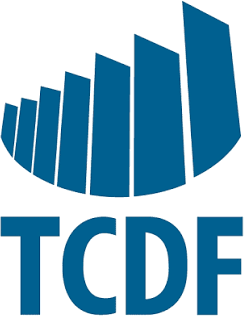

01
Tecnologia · Licitações · IA no setor público
A maior parte das licitações de tecnologia não trava na disputa. Trava na especificação.
Sou Tiago Brugger. Duas décadas em tecnologia de comunicações me ensinaram a ler uma especificação por dentro. O mercado público me ensinou que isso só vale quando o processo formal também fecha. Trabalho na junção das duas coisas desde 2018.
"Conhecimento técnico sem leitura do contexto público não entrega projeto. E leitura do contexto sem base técnica não sustenta proposta."
Opinião
O que eu vejo em campo, por escrito
Textos curtos sobre decisões que parecem detalhe no papel e mudam o resultado do processo.
Um caso
Um edital que já indicava o resultado antes de ser publicado
Um edital de telefonia exigia certificação ambiental nacional para um equipamento que, por natureza, é fabricado e certificado fora do Brasil. A exigência parecia plausível. Meses depois, todos os fornecedores foram inabilitados e o órgão teve de recomeçar uma compra que já era urgente.
Três perguntas para quem redige o termo de referência
02
Ela se aplica a esse tipo de produto?
03
Algum fornecedor real consegue atender?

Projeto na prática
Um padrão, quatro ambientes diferentes
O Tribunal de Contas do DF adotou o Microsoft Teams como padrão e precisava levá-lo a salas setoriais, à sala da diretoria e às salas de aula da Escola de Contas. Cada ambiente foi dimensionado para o próprio uso, e na diretoria o som que já existia foi aproveitado.
Trajetória em números
Experiência construída em campo
E mantida com ferramentas próprias: os sistemas de acompanhamento de licitação e os painéis de dados públicos que eu uso começaram como problema meu.
21anos em tecnologia de comunicações
8anos dedicados a licitações públicas
2.000+órgãos públicos com editais analisados
26 + DFtodos os estados do país
Contagem feita a partir de registros próprios desde 2020.
Continue por aqui
Outros caminhos para me conhecer
Trajetória
Um técnico que aprendeu o negócio
Da manutenção de sistemas de comunicação às licitações públicas, e o que cada etapa ensinou.
Conhecer minha trajetória →Na minha cidade
Como eu participo da vida pública de Itanhaém
Dados públicos do município, a atuação com a APAE e a participação em conselhos e audiências da cidade.
Conhecer a atuação comunitária →Nas redes
Publicações organizadas por tema
Licitações, tecnologia pública, Itanhaém e reflexões, nas publicações do LinkedIn e do Instagram.
Ver publicações →